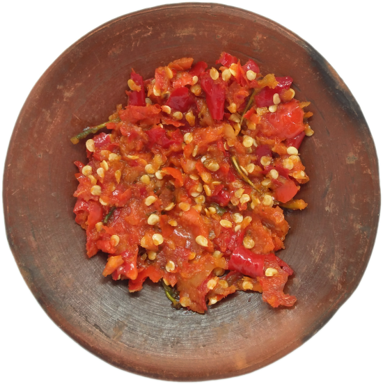

SAMBAL OELEK? YES SAMBAL OELEK CAKAR! AVAIBLE ONLY 15.000 FOR ONE PRICE <3


A hot sauce in one of its purest forms,
Indonesian sambal oelek is merely freshly ground hot red chiles
with some salt and vinegar for flavor and preservation.
Sure, it's simple, but it's also incredibly awesome and infinitely useful.
create by
Nabilah | Tian | Mawar | Sabrina | Ali